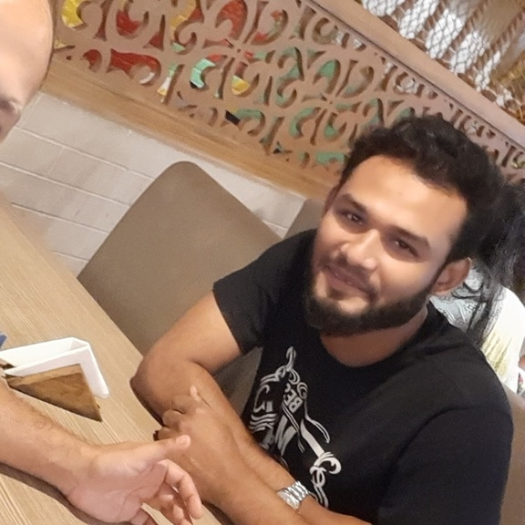

Product-Minded Engineering
Build the real thing.
I start with the actual problem — talking to users and stakeholders — then turn ambiguous requirements into concrete flows, APIs, UI states and testable behaviour.
Web + mobile · one codebaseForward Deployed Engineer · Full-Stack · AI & Automation · Dhaka
I turn messy business requirements into working software — web, mobile, data and AI — that ships fast and holds up in production.
Scroll to begin
5+
Years across commerce, analytics & engineering
40%
Reporting overhead automated away
+15%
Repeat-purchase uplift from CRM workflows
+50%
Marketplace partner acquisitions at Daraz
4
Products shipped · web · mobile · automation · BI
Why I do this work
Good software should shorten the distance between a problem and a working release.
I've always believed software is really about people: the customer waiting on an order, the manager buried in spreadsheets, the team that needs an answer by Monday. I started on the marketplace floor at Daraz and in retail ops, then learned to build the tools myself. Today I still get the same thrill when a messy requirement turns into something that ships and gets used.
Three pillars
Three disciplines, one outcome: software that ships sooner and holds up in production.
Build the real thing.
I start with the actual problem — talking to users and stakeholders — then turn ambiguous requirements into concrete flows, APIs, UI states and testable behaviour.
Web + mobile · one codebaseMake systems talk.
I build the glue layer around existing platforms: WooCommerce and WordPress, REST services, webhooks, auth, caching and idempotent workflows that survive contact with reality.
Idempotent · verified · failoverUse AI as a lever.
I put LLMs, RAG and agents into real workflows — and use AI-native development to accelerate exploration, scaffolding and debugging while keeping ownership of architecture and quality.
RAG · Agents · EvalsThe story

2019
North South University
Graduated with the foundations — data structures, systems, and the itch to build things that actually work.
2020 to 2022
Daraz Bangladesh
Managed marketplace partners, campaigns and performance tracking — and grew partner acquisitions by 50% through targeted outreach.
2023 to 2024
Thriving Skills
Analyzed learner engagement and customer workflows, and spearheaded development of the Thriving Skills Mobile App to scale course discovery and mobile learner access.
Feb to May 2024
NZ TEX GROUP
Worked with R&D and business stakeholders on technology and product initiatives, preparing technical and business material for management.
2024 to present
Gear Master
Own business operations, process improvement and customer-facing workflows in retail — running leaner with data and lightweight automation.
2025
Academy of Business Professionals
Formalized the toolkit: statistics, machine learning and decision support for real business questions.
2025 to present
DEEN Commerce
Live where business meets engineering: architected the cross-platform DEEN Mobile App and lightweight DEEN Mobile App Lite; engineered DEEN BI Intel & Ops Automation with automated weekly reporting (−40% overhead) and CRM retention pipelines (+15% repeat purchases).
2026 to present
Co-founded a digital engineering and modern tech agency. Directing engineering standards, modern web and cloud architectures, and AI-driven automation systems for high-growth ventures.
“From partner floors to product releases. Every step taught me to ship what people actually use.”
Capabilities
From storefront to server: React, Next.js and React Native on the front, FastAPI/Fastify REST services behind — one codebase, every surface.
From raw operational data to decisions: analytics tooling, automated reporting and workflows that take repetitive work off the team's plate.
LLMs, retrieval-augmented generation and agents wired into real products and workflows — with evaluation and ownership, not demos.
Education & proof of work
Fundamentals first: a CS degree, a data-science postgraduate diploma, and products shipped in public.
Statistics · ML · Decision support
Software engineering foundations
CybrCraft · DEEN Mobile · DEEN BI Intel · Thriving Skills
Case files
Company data stays confidential, so these are the stories behind the numbers.
Next chapter
Open to Forward Deployed Engineer and full-stack roles — and to conversations with teams who want software that ships.